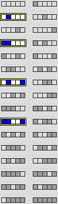

Ninth Homework Set Answers
1. This N = 5 CA rule produces the same pattern. Note it contains the N = 3 configuration giving a live cell, along with all combinations of the two surrounding cells. So both produce the same patterns.

Return to
Homework 9 Practice
.